Hansman, Simon Luke. "A taxonomy of network and computer attack methodologies." (2003), p. 19, [link]

Howard, John. "An analysis of security incidents on the Internet." PhD thesis, Carnegie Mellon University (1998), p. 64 (pdf:96), [link]

Howard, John. "An analysis of security incidents on the Internet." PhD thesis, Carnegie Mellon University (1998), p. 174, [link]

Howard, John. "An analysis of security incidents on the Internet." PhD thesis, Carnegie Mellon University (1998), p. 139 (pdf:171), [link]

GitHub timeline for commits and wind rose for [commits, code review, issues, pull requests], [link]

de Vries, Johannes, et al. "Systems for detecting advanced persistent threats: A development roadmap using intelligent data analysis." 2012 International Conference on Cyber Security. IEEE, 2012, [link]
What? Where? How? Why?
de Vries, Johannes, et al. "Systems for detecting advanced persistent threats: A development roadmap using intelligent data analysis." 2012 International Conference on Cyber Security. IEEE, 2012, [link]

de Vries, Johannes, et al. "Systems for detecting advanced persistent threats: A development roadmap using intelligent data analysis." 2012 International Conference on Cyber Security. IEEE, 2012, [link]
different pathways
Ning, Peng, Yun Cui, and Douglas S. Reeves. "Constructing attack scenarios through correlation of intrusion alerts." Proceedings of the 9th ACM Conference on Computer and Communications Security. 2002., [link]

Ning, Peng, Yun Cui, and Douglas S. Reeves. "Constructing attack scenarios through correlation of intrusion alerts." Proceedings of the 9th ACM Conference on Computer and Communications Security. 2002., [link]
Gazula, Mohan Buvana. Cyber warfare conflict analysis and case studies. Diss. Massachusetts Institute of Technology, 2017., p. 23, [link]

timeline
Gazula, Mohan Buvana. Cyber warfare conflict analysis and case studies. Diss. Massachusetts Institute of Technology, 2017., p. 25, [link]
phases
Digital Pathways, [link]
Interactive
Digital Pathways, [link]
Cookies
Huang, Linan, and Quanyan Zhu. "Adaptive strategic cyber defense for advanced persistent threats in critical infrastructure networks." ACM SIGMETRICS Performance Evaluation Review 46.2 (2019): 52-56., [link]
Using icons
Onashoga, Saidat Adebukola, et al. "CK-RAID: Collaborative Knowledge Repository for Intrusion Detection System." Journal of computing and information technology 27.2 (2019): 29-39., [link]

CyberROAD - a research project funded by the European Commission under the Seventh Framework Programme., [link], [video]
3D folders / classes
Chen, Ping, Lieven Desmet, and Christophe Huygens. "A study on advanced persistent threats." IFIP International Conference on Communications and Multimedia Security. Springer, Berlin, Heidelberg, 2014., [link]
simple table
Choras, Michal, et al. "Comprehensive approach to increase cyber security and resilience." 2015 10th International Conference on Availability, Reliability and Security. IEEE, 2015, p. 692 (pdf: 7), [link]
Turner, Angela. "The Utility of Technacy Genre Theory in Technology Education: A Case Study into Food Technology Teaching." Technology Education for the Future: A Play on Sustainability (2013), (pdf: 486 p.), [link]
GeoXray Demonstration (9:38 sec), [video],[link]
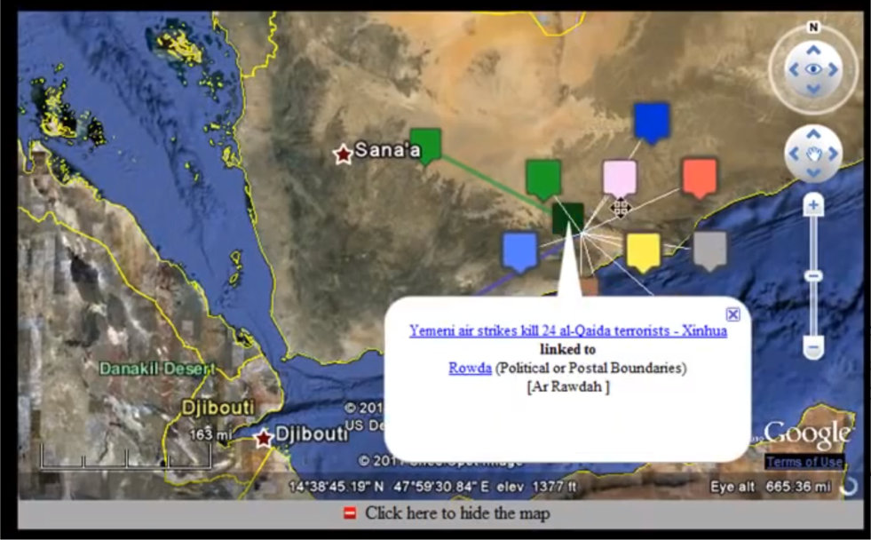stucted tree view and [events] on the map
Gu, Guofei, Junjie Zhang, and Wenke Lee. "BotSniffer: Detecting botnet command and control channels in network traffic." (2008), p.3, [link]
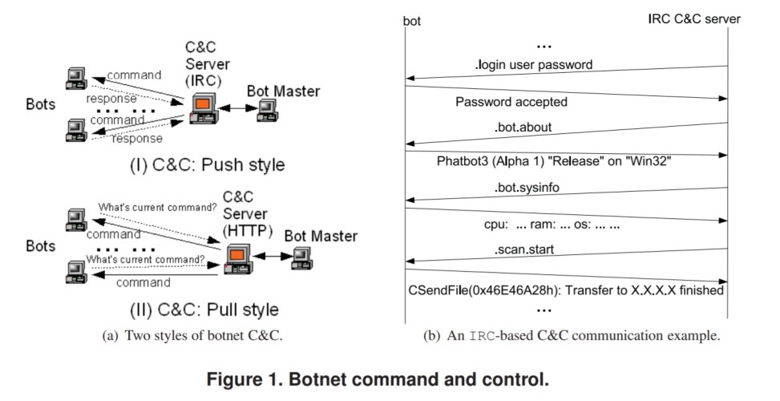two flows: macro interaction and protocol details
Gu, Guofei, Junjie Zhang, and Wenke Lee. "BotSniffer: Detecting botnet command and control channels in network traffic." (2008), p.6, [link]

Classic graphs with numbers and common time flow
Zhang, Guogang, and Xiaoping Li. "Python Network Source Automatic Evaluation System." 2016 4th International Conference on Electrical & Electronics Engineering and Computer Science (ICEEECS 2016). Atlantis Press, 2016, [link]
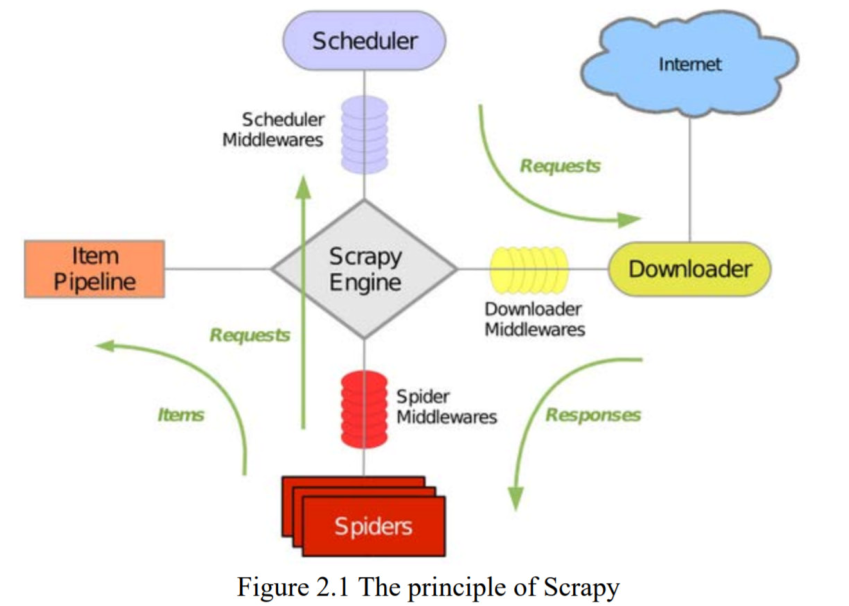Scrapy is a Python language based on Framework Crawler
Broll, Brian, et al. "Customizing Scripted Bots: Sample Efficient Imitation Learning for Human-like Behavior in Minecraft.", [link]
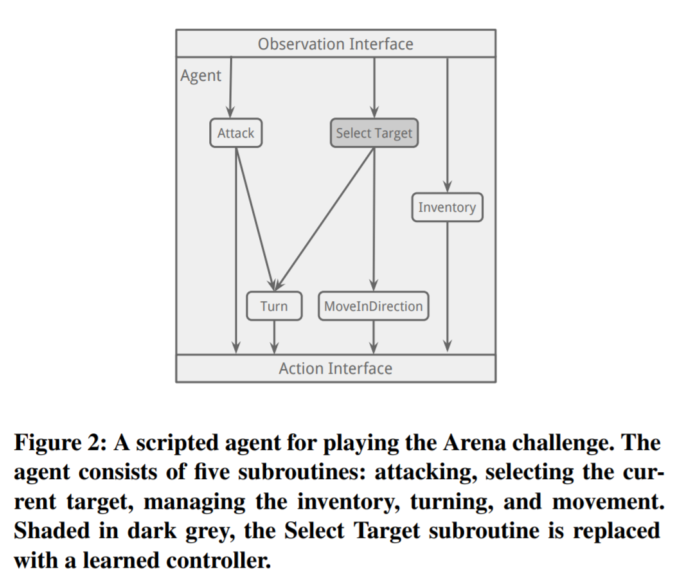differet connections and connecting
Broll, Brian, et al. "Customizing Scripted Bots: Sample Efficient Imitation Learning for Human-like Behavior in Minecraft.", [link]
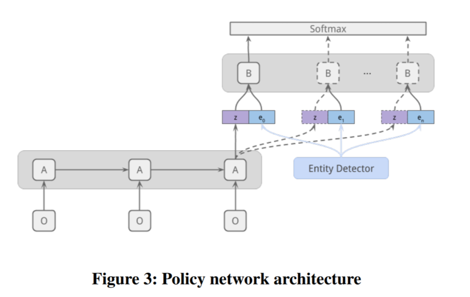complex func. execution looks fine
Broll, Brian, et al. "Customizing Scripted Bots: Sample Efficient Imitation Learning for Human-like Behavior in Minecraft.", [link]
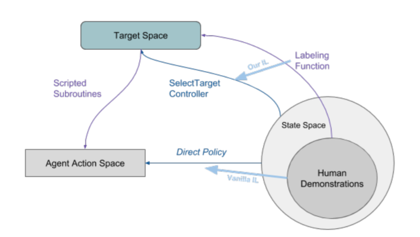colors
Broll, Brian, et al. "Customizing Scripted Bots: Sample Efficient Imitation Learning for Human-like Behavior in Minecraft.", [link]
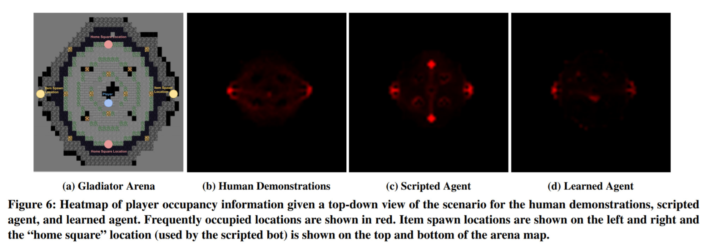colors
Jonker, Hugo, Benjamin Krumnow, and Gabry Vlot. "Fingerprint Surface-Based Detection of Web Bot Detectors." European Symposium on Research in Computer Security. Springer, Cham, 2019, [link]
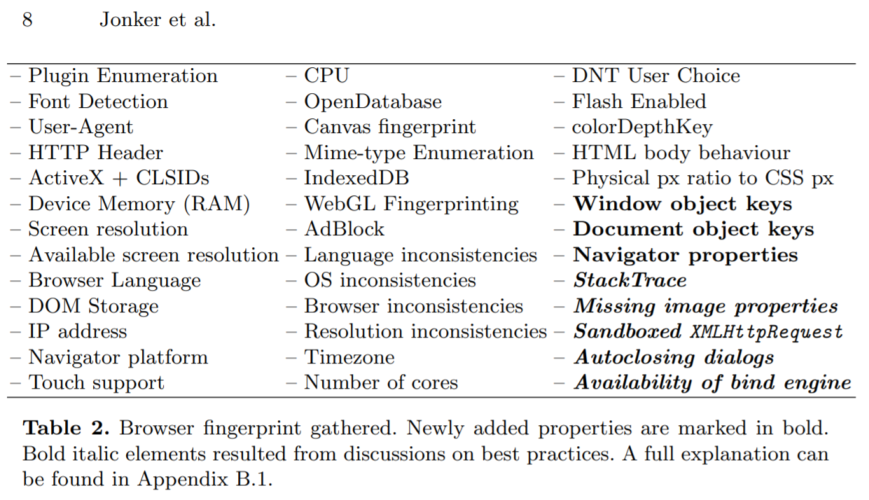No viz but it's important table. Just to mention. Browser fingerprint gathered. Newly added properties are marked in bold. Bold italic elements resulted from discussions on best practices.
Jonker, Hugo, Benjamin Krumnow, and Gabry Vlot. "Fingerprint Surface-Based Detection of Web Bot Detectors." European Symposium on Research in Computer Security. Springer, Cham, 2019, [link]
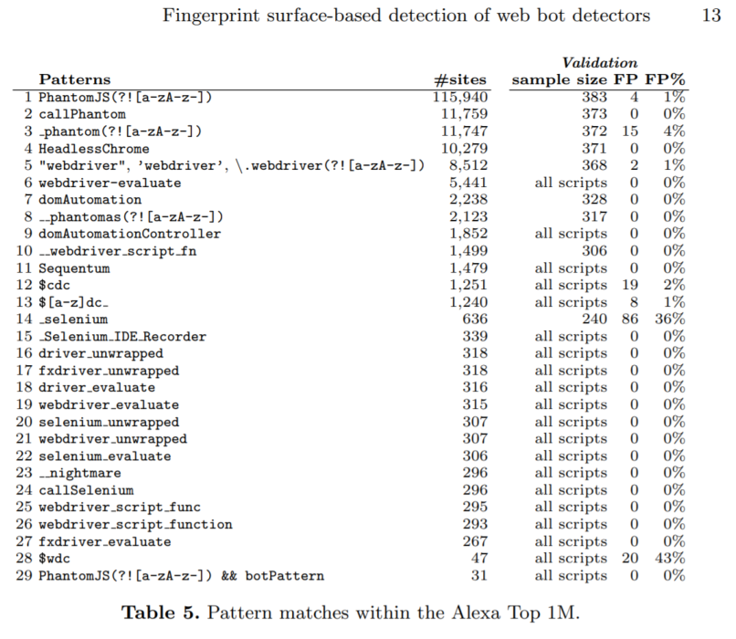browser detection patterns
Luo, Yang, et al. "BotGraph: Web Bot Detection Based on Sitemap." arXiv preprint arXiv:1903.08074 (2019), [link]
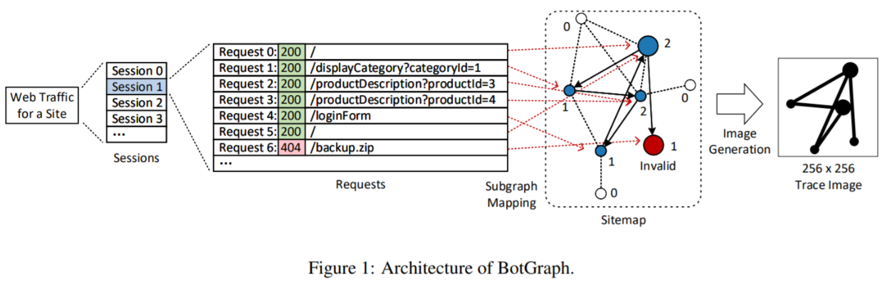that's amazing. very useful and easy
Luo, Yang, et al. "BotGraph: Web Bot Detection Based on Sitemap." arXiv preprint arXiv:1903.08074 (2019), [link]
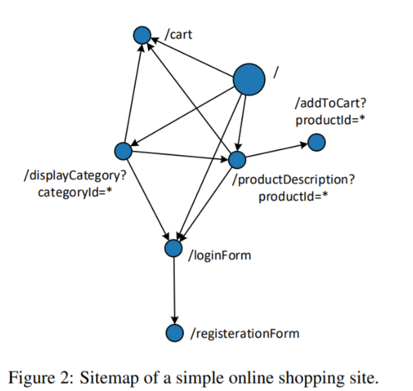simple graph. plz remember about simple graphs
Luo, Yang, et al. "BotGraph: Web Bot Detection Based on Sitemap." arXiv preprint arXiv:1903.08074 (2019), [link]
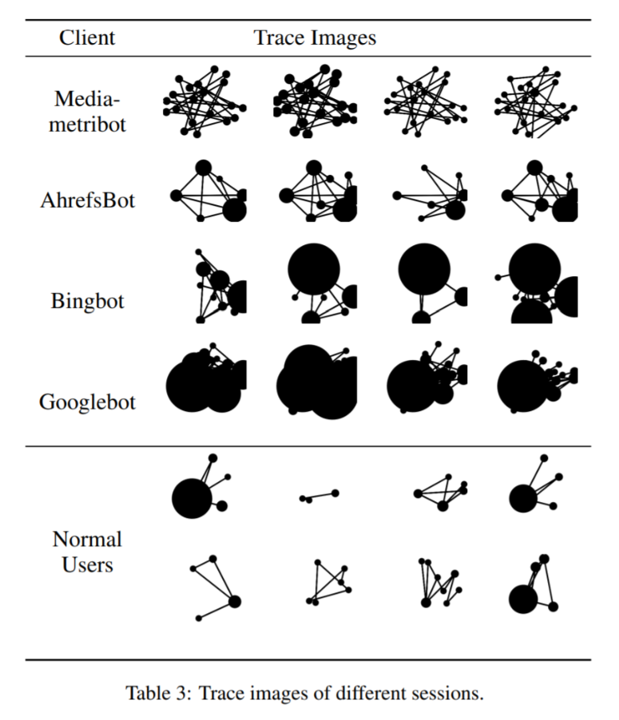trace images
Doran, Derek, and Swapna S. Gokhale. "Web robot detection techniques: overview and limitations." Data Mining and Knowledge Discovery 22.1-2 (2011): 183-210 [link]
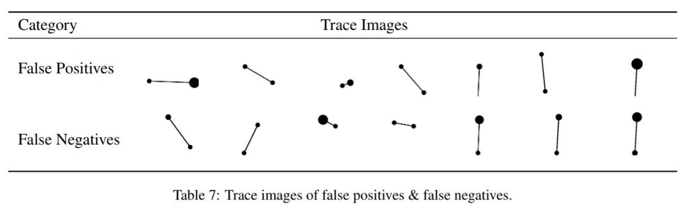more simple then text
Hsu, Ching-Hsiang, Chun-Ying Huang, and Kuan-Ta Chen. "Fast-flux bot detection in real time." International Workshop on Recent Advances in Intrusion Detection. Springer, Berlin, Heidelberg, 2010. [link]
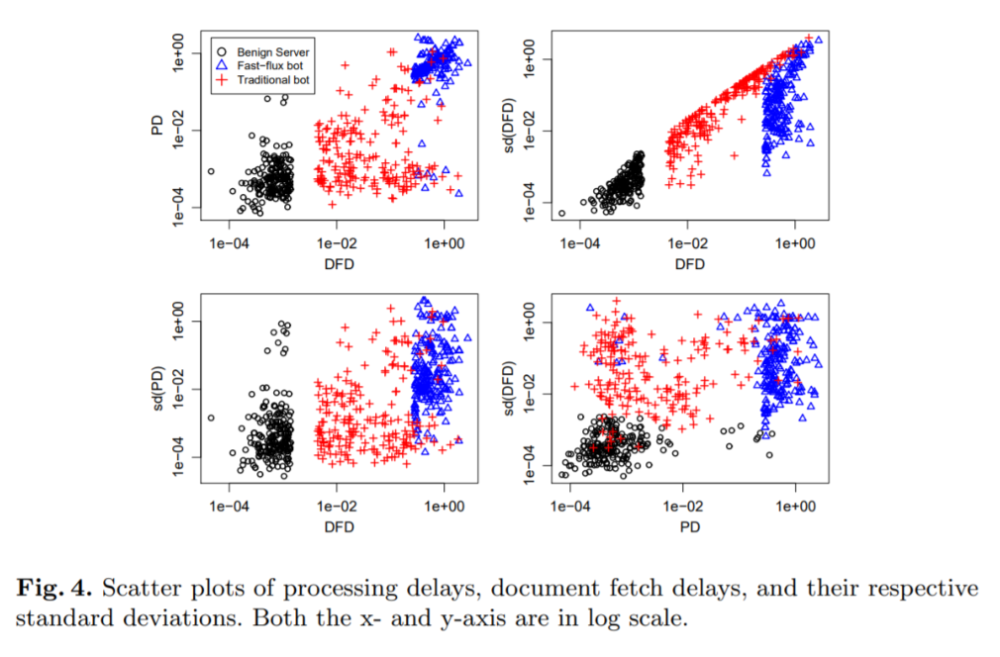fine clusterization
Hsu, Ching-Hsiang, Chun-Ying Huang, and Kuan-Ta Chen. "Fast-flux bot detection in real time." International Workshop on Recent Advances in Intrusion Detection. Springer, Berlin, Heidelberg, 2010. [link]
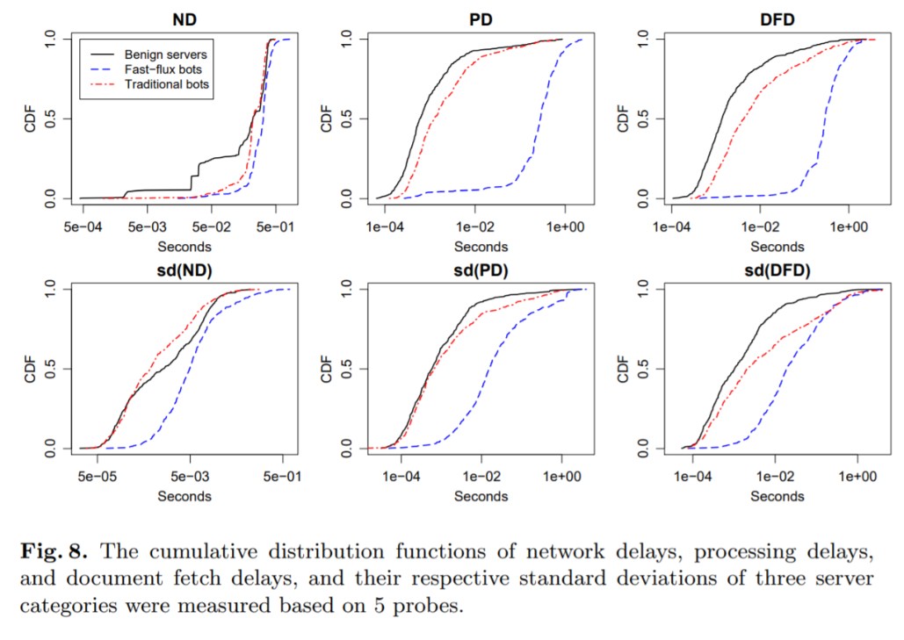The cumulative distribution functions of ...
Crypto Trading Bot, Daniel Espendiller [link]
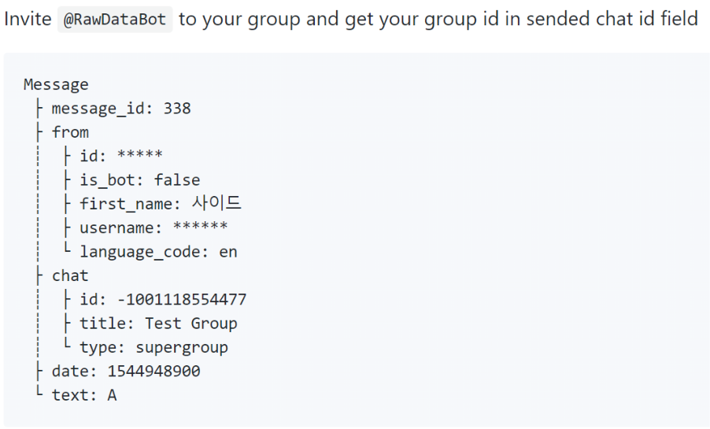text description for data structure. Fine view
Vines, Forrest MacKenzie, et al. "Web Bot detection and human differentiation." U.S. Patent No. 10,326,789. 18 Jun. 2019. [link]
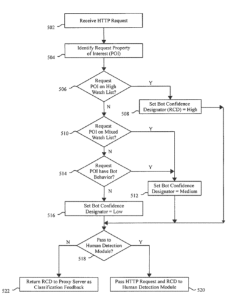Classic diagram for algorithm.